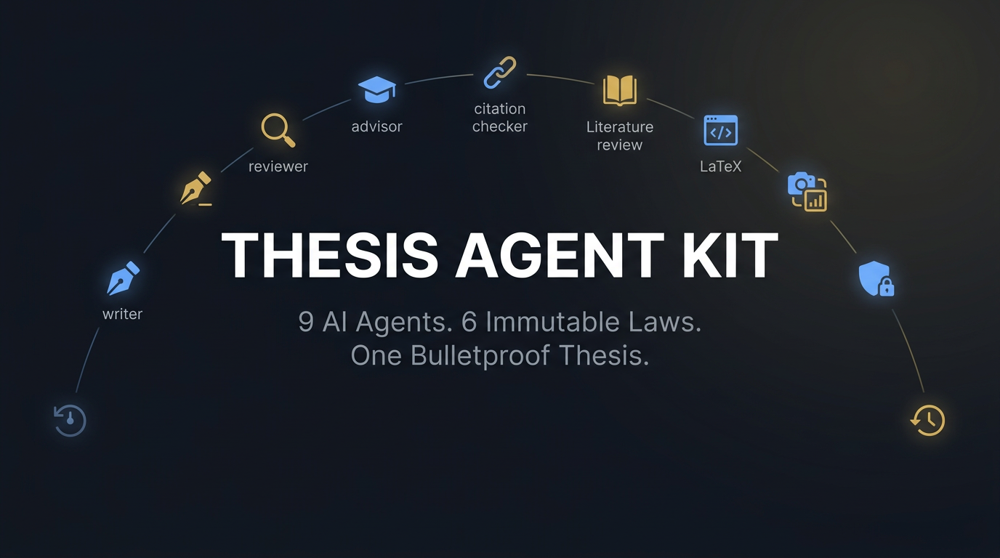

Research Interrogator
Builds project context and blocks drafting until confidence clears the quality gate.
Open-source research infrastructure
Nine specialist AI agents, six immutable writing laws, and a traceable workflow that turns your AI code editor into a research writing command center.

The research team
Each role came from a real failure mode encountered during thesis research—not from a theoretical workflow.
Builds project context and blocks drafting until confidence clears the quality gate.
Drafts traceable prose using research questions and T-C-E-L paragraph structure.
Challenges research design, argument structure, and defense readiness.
Runs an adversarial six-pillar review before work is accepted.
Verifies references through a DOI chain and flags fabricated citations.
Supports PRISMA-informed search, synthesis, and gap validation.
Handles venue templates, references, figures, and compilation failures.
Creates code-first, reproducible research visuals with traceability.
Saves, restores, and compares writing states without requiring Git expertise.
The quality floor
Every paragraph must remain connected to the research design and supported by evidence.
Quick start
Bring the kit into your AI code editor, complete the project configuration, and let the confidence gate establish a reliable foundation.
git clone https://github.com/Sai21112000/Thesis-Agent-Kit.git
cd Thesis-Agent-Kit
# Open the repository in Cursor or Windsurf
# Start with FIRST-TIMERS-GUIDE.md
# Complete PROJECT-CONFIG.mdBuilt from a defended thesis
Open source, domain-agnostic, and designed for accountable research.